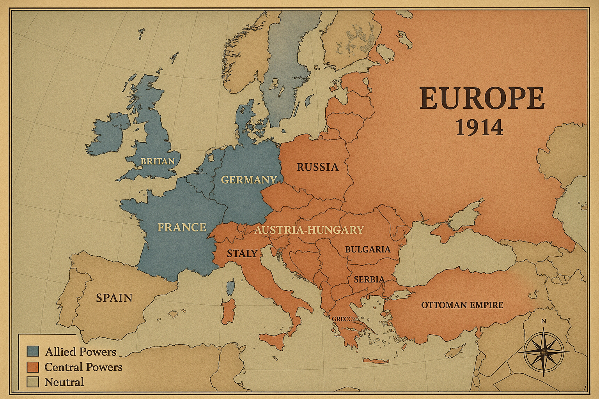
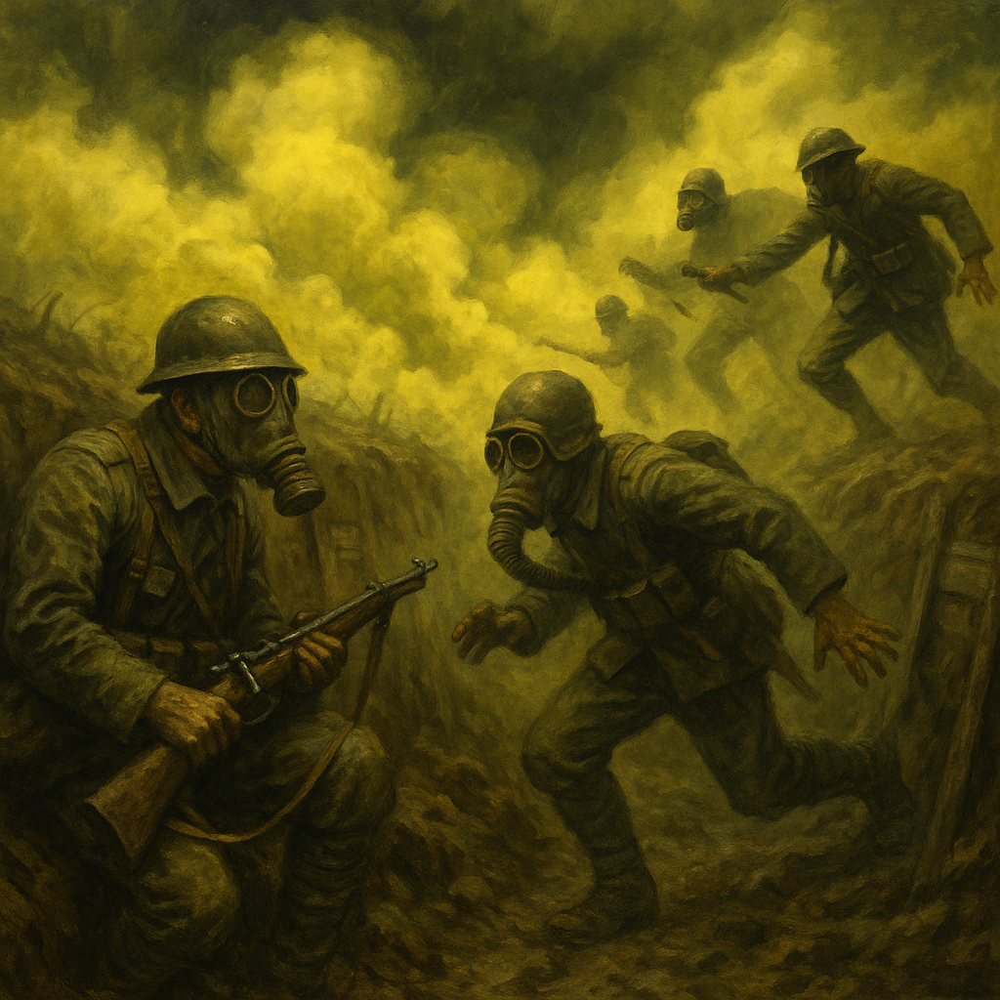

The Great War
World War 1: 1914-1918
🔥 The Spark That Started It All

Imagine a single gunshot that changed the entire world forever. On June 28, 1914, Archduke Franz Ferdinand of Austria-Hungary was assassinated in Sarajevo by a Serbian nationalist named Gavrilo Princip. This wasn't just any murder - it was the match that lit the powder keg of Europe.
Europe in 1914 was like a bunch of rival gangs, all armed to the teeth and looking for a fight. Countries had formed alliances - basically promising to back each other up in a fight. When Austria-Hungary declared war on Serbia, it was like dominoes falling: Russia backed Serbia, Germany backed Austria-Hungary, France backed Russia, and Britain backed France.
⚡ Did You Know?
Gavrilo Princip was only 19 years old when he changed history! He was part of a secret group called the "Black Hand" that wanted to free Bosnia from Austrian rule. Talk about teenage rebellion taken to the extreme!
🗺️ The Alliance System: Choose Your Side

Allied Powers
Central Powers
Neutral Countries
The Allied Powers (The Entente)
Main Players: Britain, France, Russia, Italy (joined 1915), United States (joined 1917)
Their Goal: Stop German and Austrian expansion, protect smaller nations
Advantages: Control of the seas, more resources, bigger population
The Central Powers
Main Players: Germany, Austria-Hungary, Ottoman Empire, Bulgaria
Their Goal: Expand territory, break the "encirclement" by enemies
Advantages: Better organized, superior military technology initially
Neutral Countries
Main Players: Spain, Netherlands, Switzerland, Scandinavian countries
Their Strategy: Stay out of the conflict, maintain trade with both sides
Challenge: Pressure from both sides to join the war
⚔️ New Weapons of War
This wasn't your grandfather's war! WWI introduced terrifying new technologies that made it the deadliest conflict the world had ever seen.

â˜ ï¸ Poison Gas
Chlorine, mustard gas, and phosgene turned battlefields into death traps. Gas masks became as essential as helmets. The psychological terror was almost worse than the physical damage.
🚗 Tanks
These "land ships" could cross trenches and barbed wire that stopped infantry. The British Mark I tank looked like a metal monster and scared the life out of enemy soldiers!
✈️ Aircraft
Started as reconnaissance tools but quickly became fighters and bombers. Aces like the Red Baron became legends, fighting duels in the sky at 100 mph!
🚢 Submarines
German U-boats could sink ships without warning, hiding beneath the waves. They nearly starved Britain into surrender by sinking supply ships!
🏕️ Life in the Trenches
Forget everything you think you know about war from movies. The Western Front became a 400-mile-long line of trenches stretching from the North Sea to Switzerland. Imagine living in a muddy ditch for months, with rats, disease, and the constant threat of death.
Soldiers faced "trench foot" from constantly wet conditions, lice infestations, and the psychological horror of "shell shock" (now called PTSD). The area between opposing trenches - "No Man's Land" - was a hellscape of barbed wire, craters, and corpses.
Yet somehow, soldiers found ways to maintain hope. They wrote letters home, played cards, and even organized informal truces during holidays. The famous Christmas Truce of 1914 saw enemies playing football together in No Man's Land!
ğŸ The Home Front
This was "total war" - everyone was involved, not just soldiers. Women entered factories to build weapons and ammunition, earning the nickname "Munitionettes." Food was rationed, and families grew "victory gardens" to feed themselves.
Propaganda posters encouraged people to buy war bonds, save food, and support the troops. Children collected scrap metal, and even Hollywood stars sold war bonds. The entire society was mobilized for war.
👩â€ğŸ Women's Revolution
WWI gave women unprecedented opportunities. They drove buses, worked in banks, served as police officers, and proved they could do "men's work." This experience helped fuel the women's suffrage movement - the fight for voting rights!
📊 The Staggering Cost
17 Million
Total Deaths
21 Million
Wounded
$200 Billion
Cost (1918 dollars)
4 Years
Duration
📜 The End and Its Consequences
By 1918, everyone was exhausted. The German spring offensive failed, American troops were arriving in huge numbers, and revolution was brewing in Germany. On November 11, 1918, at 11 AM, the guns finally fell silent.
But the peace was harsh. The Treaty of Versailles blamed Germany for everything and demanded huge payments. This created resentment that would later help fuel World War II. The old empires - Austrian, Russian, Ottoman - collapsed, creating new countries and new problems.
The world that emerged from WWI was fundamentally different. Old certainties were shattered, new technologies had been unleashed, and millions of families mourned their dead. It truly was "the war to end all wars" - except it wasn't.
🌠The World Changed Forever
WWI ended four empires, created new nations, gave women the vote in many countries, and set the stage for the Russian Revolution. It was the end of the old world and the birth of the modern age. Even today, we're still living with its consequences!